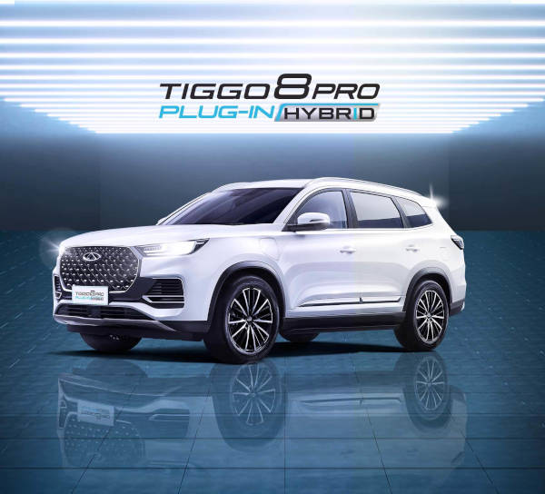
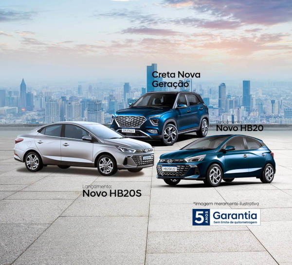
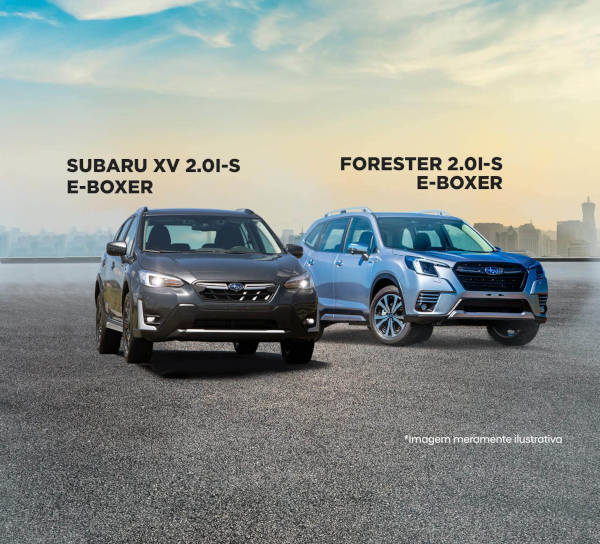
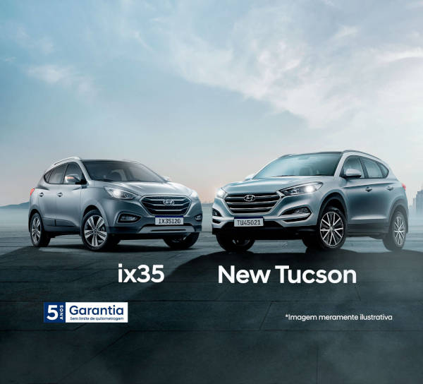
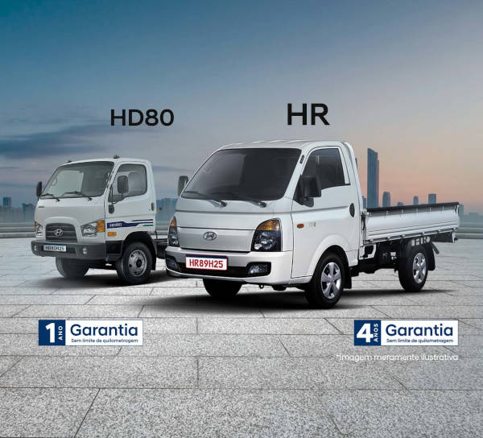

menu
search





Saiba mais
nossos carros
caoa chery
hyundai
hyundai caminhões
hb20 e creta
ford
subaru
Unfortunately Your browser can't support this content
pós-venda exclusivo caoa: os melhores serviços com a garantia da caoa.
Agende um serviço
 search
search
![Imagem de fundo branca. Uma fila de carros lado a lado com suas frentes virada pra nós. Todos são da FORD. Da esquerda para a direita o primeiro carro é um fungão Ford Transit com faróis acesos e sua posição é levemente em diagonal para sua direita, o segundo carro é um Ford Mustang com faróis acesos, o terceiro carro é um Ford Bronco e sua posição é levemente em diagonal para sua esquerda, o quarto carro é um Ford Maverick e sua posição é levemente em diagonal para sua esquerda, o quinto carro é um Ford Territory e sua posição é levemente em diagonal para sua esquerda , e o sexto e último carro é o Ford Ranger e sua posição é levemente em diagonal para sua esquerda.](./images/slide6_ford-mobile-600.jpg)